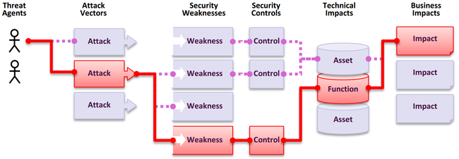

O que são Riscos de Segurança de Aplicações?
Atacantes podem usar diversos caminhos diferentes através de sua aplicação para causar danos ao seu negócio ou organização. Cada um desses caminhos representa um risco potencial que precisa ser investigado.

| Agentes de Ameaça | Vetores de \ Ataque | Explorabilidade |
Probabilidade de Ausência de Controles
de Segurança |
Impactos
Técnicos |
Impactos de
Negócio |
| Por ambiente, dinâmico por cenário situacional | Por exposição da aplicação (por ambiente) | Média Ponderada de Exploit | Controles Ausentes por taxa de Incidência média ponderada pela cobertura | Média Ponderada de Impacto | Por Negócio |
Em nossa Classificação de Risco, levamos em conta os parâmetros universais de explorabilidade, a probabilidade média de ausência de controles de segurança para uma fraqueza e seus impactos técnicos.
Cada organização é única, assim como os agentes de ameaça para essa organização, seus objetivos e o impacto de qualquer violação. Se uma organização de interesse público utiliza um sistema de gerenciamento de conteúdo (CMS) para informações públicas e um sistema de saúde utiliza exatamente o mesmo CMS para registros de saúde sensíveis, os agentes de ameaça e os impactos de negócio podem ser muito diferentes para o mesmo software. É crítico entender o risco para sua organização com base na exposição da aplicação, nos agentes de ameaça aplicáveis por cenário situacional (para ataques direcionados e não direcionados por negócio e localização) e nos impactos de negócio individuais.
Como os dados são usados para selecionar e ranquear as categorias
Em 2017, selecionamos as categorias pela taxa de incidência para determinar a probabilidade e, em seguida, as ranqueamos por meio de discussões da equipe baseadas em décadas de experiência em Explorabilidade, Detectabilidade (também uma probabilidade) e Impacto Técnico. Para 2021, utilizamos dados de Explorabilidade e Impacto (Técnico) das pontuações CVSSv2 e CVSSv3 no National Vulnerability Database (NVD). Para 2025, continuamos com a mesma metodologia criada em 2021.
Baixamos o OWASP Dependency Check e extraímos as pontuações de Exploit e Impact do CVSS, agrupadas por CWEs relacionadas. Isso exigiu bastante pesquisa e esforço, pois todas as CVEs possuem pontuações CVSSv2, mas há falhas no CVSSv2 que o CVSSv3 deveria corrigir. Após um certo ponto no tempo, todas as CVEs recebem também uma pontuação CVSSv3. Além disso, as faixas de pontuação e fórmulas foram atualizadas entre o CVSSv2 e o CVSSv3.
No CVSSv2, tanto o Exploit quanto o Impacto (Técnico) podiam chegar a 10.0, mas a fórmula os reduzia para 60% para Exploit e 40% para Impacto. No CVSSv3, o máximo teórico foi limitado a 6.0 para Exploit e 4.0 para Impacto. Com a ponderação considerada, a pontuação de Impacto deslocou-se para cima — quase um ponto e meio em média no CVSSv3 — e a explorabilidade moveu-se quase meio ponto para baixo em média quando realizamos a análise para o Top Ten de 2021.
Existem aproximadamente 175 mil registros (contra 125 mil em 2021) de CVEs mapeadas para CWEs no National Vulnerability Database (NVD), extraídos do OWASP Dependency Check. Além disso, há 643 CWEs únicas mapeadas para CVEs (contra 241 em 2021). Dentro das quase 220 mil CVEs extraídas, 160 mil tinham pontuações CVSS v2, 156 mil tinham pontuações CVSS v3 e 6 mil tinham pontuações CVSS v4. Muitas CVEs possuem múltiplas pontuações, por isso o total ultrapassa 220 mil.
Para o Top Ten 2025, calculamos as pontuações médias de exploit e impacto da seguinte maneira: agrupamos todas as CVEs com pontuações CVSS por CWE e ponderamos as pontuações de exploit e impacto pela porcentagem da população que possuía CVSSv3, bem como a população restante com pontuações CVSSv2, para obter uma média geral. Mapeamos essas médias para as CWEs no conjunto de dados para usar como pontuação de Exploit e Impacto (Técnico) para a outra metade da equação de risco.
Por que não usar o CVSS v4.0? Porque o algoritmo de pontuação foi fundamentalmente alterado e não fornece mais facilmente as pontuações de Exploit ou Impact como o CVSSv2 e o CVSSv3 fazem. Tentaremos descobrir uma maneira de usar a pontuação CVSS v4.0 para versões futuras do Top Ten, mas não conseguimos determinar uma forma oportuna de fazê-lo para a edição de 2025.
Para a taxa de incidência, calculamos a porcentagem de aplicações vulneráveis a cada CWE a partir da população testada por uma organização durante um período. Como lembrete, não estamos usando a frequência (ou quantas vezes um problema aparece em uma aplicação); estamos interessados em qual porcentagem da população de aplicações apresentou cada CWE.
Para a cobertura, analisamos a porcentagem de aplicações testadas por todas as organizações para uma determinada CWE. Quanto maior a cobertura calculada, maior a garantia de que a taxa de incidência é precisa, pois o tamanho da amostra é mais representativo da população.
A fórmula que utilizamos para esta iteração é semelhante à de 2021, com algumas mudanças na ponderação: (Taxa de Incidência Máxima % _ 1000) + (Cobertura Máxima % _ 100) + (Média de Exploit _ 10) + (Média de Impacto _ 20) + (Soma de Ocorrências / 10000) = Pontuação de Risco
As pontuações calculadas variaram de 621,60 para a categoria de Controle de Acesso Quebrado a 271,08 para Erros de Gerenciamento de Memória.
Este não é um sistema perfeito, mas é valioso para ranquear categorias de risco.
Um desafio adicional crescente é a definição de "aplicação". À medida que a indústria muda para diferentes arquiteturas compostas por microsserviços e outras implementações menores que uma aplicação tradicional, os cálculos tornam-se mais difíceis. Por exemplo, se uma organização está testando repositórios de código, o que ela considera uma aplicação? Semelhante ao crescimento do CVSSv4, a próxima edição do Top Ten pode precisar ajustar a análise e a pontuação para dar conta de uma indústria em constante mudança.
Fatores de Dados
Existem fatores de dados listados para cada uma das categorias do Top Ten; aqui está o que eles significam:
CWEs Mapeadas: O número de CWEs mapeadas para uma categoria pela equipe do Top Ten.
Taxa de Incidência: A taxa de incidência é a porcentagem de aplicações vulneráveis àquela CWE dentro da população testada por aquela organização para aquele ano.
Exploit Ponderado: A subpontuação de Exploit dos scores CVSSv2 e CVSSv3 atribuídos a CVEs mapeadas para CWEs, normalizada e colocada em uma escala de 10 pontos.
Impacto Ponderado: A subpontuação de Impacto dos scores CVSSv2 e CVSSv3 atribuídos a CVEs mapeadas para CWEs, normalizada e colocada em uma escala de 10 pontos.
Cobertura (de Teste): A porcentagem de aplicações testadas por todas as organizações para uma determinada CWE.
Total de Ocorrências: Número total de aplicações em que foram encontradas as CWEs mapeadas para uma categoria.
Total de CVEs: Número total de CVEs no banco de dados do NVD que foram mapeadas para as CWEs de uma categoria.
Fórmula: (Taxa de Incidência Máxima % _ 1000) + (Cobertura Máxima % _ 100) + (Média de Exploit _ 10) + (Média de Impacto _ 20) + (Soma de Ocorrências / 10000) = Pontuação de Risco